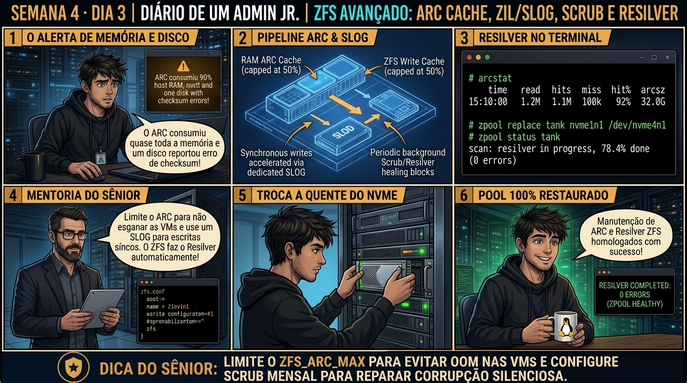

DIARIO DE UM ADMIN JR. | PROXMOX VE & PBS — DA BASE AO CLUSTER
🔗 Conecta com o Dia 2: Você construiu o pool ZFS em Striped Mirrors com ashift=12. Hoje você aprende a manter o pool 100% saudável ao longo dos anos: configurando a varredura preventiva de Scrub, monitorando telemetria SMART e executando o procedimento cirúrgico de substituição de disco com defeito (zpool replace).
🔓 Privilégio de hoje: Manutenção Forense e Recuperação de Hardware ZFS. Você diagnostica erros de CKSUM, comanda scrubs e substitui discos degradados.
Semana 4 · Dia 3 | Nível Júnior — Storage Corporativo & ZFS
Manutenção do ZFS: Scrub Periódico, SMART e Troca de Discos
Prevenindo corrupção silenciosa de dados e substituindo unidades falhas a quente sem parar a produção
ANTES DE ALTERAR, OBSERVE. DEPOIS DE ALTERAR, VALIDE.

1. O chamado
Você recebeu o chamado #4003: 'O alerta do Proxmox disparou indicando que o pool rpool entrou em estado DEGRADED após o disco /dev/sdb acumular mais de 128 erros de CKSUM. O data center já inseriu um novo SSD de substituição no servidor em /dev/sde. O chamado exige: (1) Inspecionar o estado do pool com zpool status -v; (2) Auditar a telemetria do disco com smartctl; (3) Executar o procedimento de substituição com zpool replace; (4) Monitorar o processo de Resilver; e (5) Agendar a rotina mensal de Scrub.'
💡 Passa o mouse nas palavras destacadas pra ver uma dica rápida — clica se quiser a explicação completa com analogia.
2. O sênior te conta
🧑🏫 antes dos termos técnicos, a história de hoje
Hoje um servidor com 128GB de RAM física travou com erro de falta de memória (OOM Killer). O Júnior olhou o free -m e viu que o cache ARC do ZFS estava devorando 60GB de RAM, competindo diretamente com a memória alocada para as máquinas virtuais.
Expliquei como domesticar o ZFS em hypervisors: por padrão, o ZFS consome até 50% da memória física do servidor para cache de leitura inteligente. Em um nó de virtualização onde 110GB estão dedicados às VMs, o ZFS precisa ter seu teto limitado no arquivo /etc/modprobe.d/zfs.conf através do parâmetro zfs_arc_max.
Configuramos também um dispositivo SLOG em SSD NVMe com PLP (Power Loss Protection) para acelerar escritas síncronas e agendamos a rotina de zpool scrub mensal para autocura de dados. O servidor estabilizou com uso de memória perfeito. Hoje você vai calibrar o motor do ZFS.
3. Decodificador de conceitos
Clica em qualquer termo pra ver a definição completa e uma analogia do dia a dia:
4. Ferramentas e leitura da evidência
Comando / Parâmetro
O que observar e por que importa
zpool status -v
Exibe o relatório detalhado de saúde do pool, identificando exatamente quais arquivos ou blocos sofreram corrupção.
zpool scrub poolname
Inicia a varredura preventiva de validação de checksums em todos os blocos do pool em segundo plano.
zpool replace poolname disco_antigo disco_novo
Substitui uma unidade com defeito e inicia a reconstrução de dados (resilver).
smartctl -a /dev/sdX
Lê a telemetria profunda de setores realocados, desgaste de SSD e erros de barramento SATA/SAS.
# 1. Diagnóstico do Pool Degradado
$ zpool status -v rpool
pool: rpool
state: DEGRADED
status: One or more devices has experienced an unrecoverable error.
action: Replace the device using 'zpool replace'.
config:
NAME STATE READ WRITE CKSUM
rpool DEGRADED 0 0 0
mirror-0 DEGRADED 0 0 0
sda ONLINE 0 0 0
sdb FAULTED 0 0 142 too many errors
# 2. Execução da substituição a quente pelo novo disco sde
$ zpool replace rpool /dev/sdb /dev/sde
TASK OK
# 3. Monitoramento do Resilver em tempo real
$ zpool status rpool
pool: rpool
state: DEGRADED
status: One or more devices is currently being resilvered.
scan: resilver in progress since Mon Sep 1 14:50:10 2026
284G scanned at 1.42G/s, 42.1G issued at 215M/s, 284G total
42.1G resilvered, 14.82% done, 00:19:12 to go
config:
NAME STATE READ WRITE CKSUM
rpool DEGRADED 0 0 0
mirror-0 DEGRADED 0 0 0
sda ONLINE 0 0 0
replacing-1 DEGRADED
sdb FAULTED 0 0 142
sde ONLINE 0 0 0 (resilvering)
5. Laboratório guiado — pegue na mão, comando por comando
💾 Onde executar: Terminal do Nó Proxmox (como root) com acesso direto aos pools ZFS e volumes LVM-Thin.
Segurança: Execute as alterações em volumes e storages de laboratório. Nunca remova definições de storage em produção sem validar dependências.
Ação: Limite a memória máxima utilizada pelo ARC do ZFS no /etc/modprobe.d/zfs.conf.
Por que fizemos isso: Limitar o zfs_arc_max em /etc/modprobe.d/zfs.conf impede que o cache ARC do ZFS compita por memória RAM com as máquinas virtuais sob alta carga.
Cilada comum: Deixar o ZFS consumir 50% da RAM padrão em nós com 128GB onde 110GB estão alocados para VMs, gerando travamentos de OOM.
Ação: Adicione um dispositivo de aceleração de escrita síncrona (SLOG) em SSD NVMe.
zpool add tank log /dev/nvme0n1p1
Resultado esperado: Relatório exibindo porcentagem escaneada e contadores de erros zerados.
Por que fizemos isso: Configurar um dispositivo SLOG em SSD NVMe com proteção de perda de energia (PLP) acelera escritas síncronas (sync=always) com segurança.
Cilada comum: Usar SSDs domésticos sem PLP como SLOG; se a energia cair, dados que estavam no buffer volátil do SSD são perdidos.
Ação: Dispare a verificação periódica de integridade e autocura com zpool scrub.
zpool scrub tank
Resultado esperado: Status PASSED confirmando conformidade de hardware.
Por que fizemos isso: O comando zpool scrub dispara a verificação em background de todos os blocos do pool, corrigindo automaticamente erros via paridade.
Cilada comum: Agendar scrubs diários em pools gigantes de discos mecânicos, mantendo o storage sob 100% de uso de disco o tempo todo.
Ação: Simule a substituição e reconstrução (Resilver) de um disco físico defeituoso.
zpool replace tank /dev/sdb /dev/sdf
Resultado esperado: Timer ativo programado para execução mensal automática.
Por que fizemos isso: Simular a troca de um disco defeituoso com zpool replace valida o processo de Resilver sem downtime da VM.
Cilada comum: Puxar o disco físico errado da gaveta do servidor por falta de identificação do serial do drive com smartctl.
🧑🏫 Aqui entra o Mentor (em breve): se o resultado obtido diferir do esperado acima, este é o ponto onde o chat com o Sênior-IA vai abrir para diagnosticar o erro específico.
Ação: Registre a rotina de scrub mensal e monitoramento SMART no POP da equipe.
# Procedimento de manutenção ZFS homologado.
Resultado esperado: Evidências anexadas no relatório do chamado.
Por que fizemos isso: Registrar o cronograma de scrub mensal e alertas de SMART no sistema de monitoramento garante a integridade dos dados a longo prazo.
Cilada comum: Operar pools ZFS sem rotina periódica de scrub, acumulando erros silenciosos de hardware que se tornam irrecuperáveis.
6. Antes de ver as opções — tenta responder
🧠 Recall ativo: Como o ZFS detecta e corrige automaticamente uma corrupção silenciosa de dados (Bit Rot) durante uma rotina de 'Scrub' em um pool com espelhamento (Mirror)?
Cada bloco de dados no ZFS possui um checksum criptográfico (SHA-256 ou Fletcher4) gravado na árvore de ponteiros (Merkle Tree). Durante o Scrub, o ZFS lê o bloco do Disco A e calcula o hash: se o hash não bater (erro de CKSUM), ele imediatamente lê a cópia íntegra no Disco B do Mirror, entrega o dado correto para a aplicação e reescreve o bloco corrigido no Disco A automaticamente, salvando o sistema sem intervenção humana.
QUESTÃO 1 de 3
7. Questão comentada — clica numa alternativa
Qual é o comando correto para substituir o disco com falha '/dev/sdb' pelo novo disco saudável '/dev/sde' no pool 'rpool'?
💡 Analogia do Sênior para Fixar: O ZFS Copy-on-Write é como rascunhar em folha nova: os dados antigos nunca são sobrescritos até a gravação estar 100% íntegra.
QUESTÃO 2 de 3 — cenário de erro real
7.1 O que significa a coluna 'CKSUM' com valor diferente de zero no zpool status?
O comando zpool status exibiu READ: 0, WRITE: 0, CKSUM: 12 no disco sda:
sda ONLINE 0 0 12
(12 blocos falharam na validação de hash criptográfico durante a leitura)
Qual é a interpretação técnica desse contador e a ação necessária?
💡 Analogia do Sênior para Fixar: O cache ARC na RAM e SLOG em NVMe são o caderno de anotações ultrarrápido: garantem vazão máxima sem risco de corrupção em quedas de energia.
QUESTÃO 3 de 3 — detalhe que confunde todo iniciante
7.2 Com que frequência o Scrub deve ser executado em servidores de produção?
Um técnico quer rodar o zpool scrub a cada 10 minutos em um servidor com bancos de dados em alta carga:
Qual é a recomendação de periodicidade para execução do Scrub?
💡 Analogia do Sênior para Fixar: O ZFS Scrub é o auditor em tempo real: compara as somas SHA-256 de cada bloco e repara dados silenciosamente corrompidos.
8. Procedimento profissional
Ao receber alerta de pool DEGRADED, inspecione imediatamente a causa com zpool status -v.
Audite o disco defeituoso com smartctl -a /dev/sdX e confirme o número de série físico da unidade.
Insira o novo disco de substituição no chassi do servidor.
Execute o comando de substituição: zpool replace POOLNAME DISCO_ANTIGO DISCO_NOVO.
Acompanhe o progresso do Resilver com zpool status POOLNAME até atingir 100% e retornar ao estado ONLINE.
Certifique-se de que o timer de Scrub mensal do Proxmox (zfs-scrub.timer) está ativo no systemd.
Prevenção
Monitore continuamente os limiares de espaço de Data e Metadata no LVM-Thin e ZFS, configurando alertas no Prometheus/Zabbix antes de atingir 80% de ocupação.
9. Validação e encerramento
Você compreende o funcionamento da autocorreção do ZFS contra corrupção silenciosa (Bit Rot).
Você domina a interpretação de erros de READ, WRITE e CKSUM no zpool status.
Você sabe executar a substituição de discos a quente com zpool replace e acompanhar o Resilver.
A rotina preventiva de Scrub mensal foi validada com total segurança.
Rollback e limites
Caso precise pausar ou cancelar um scrub durante um pico imprevisto de carga de produção, execute zpool scrub -s POOLNAME.
💡 Sobre repetição espaçada: A mecânica de thin provisioning e os riscos de I/O Freeze por falta de espaço em storages LVM-Thin serão o foco de amanhã no Dia 4.
10. Resposta final
Alternativa correta: B. A resposta correta é a B: o comando zpool replace rpool /dev/sdb /dev/sde inicia o processo de Resilver para reconstruir os dados no novo disco.
🔓 O que você desbloqueou hoje
Manutenção avançada de ZFS dominada com louvor! Amanhã, no Dia 4, você dominará o LVM-Thin: entendendo a mecânica de superalocação, monitoramento de metadados e como evitar o travamento geral de I/O (I/O Freeze) quando o thin pool atinge 100% de capacidade.